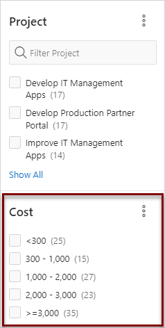

8.7.6 Editing a Faceted Search Page
Learn about how attributes can change faceted search page behavior.
Tip:
Many examples in this section are built on the
EBA_PROJECT_TASKS table available in the
sample dataset, Project Data, or the EMP table
available in the sample dataset, EMP / DEPT. To install a sample
dataset, see Using Sample
Datasets in Oracle APEX SQL Workshop
Guide.
- Reviewing Faceted Search Page Components
Review the components that comprise a faceted search page by viewing attributes in Page Designer. - Understanding a Faceted Search Page
Learn about the regions that comprise a faceted search page. - Editing Faceted Search Region Attributes
Edit region Attributes to change general search facet region behavior. - Editing Facet Attributes
Edit facet attributes to change facet behavior. - Adding a New Facet
Add new facets in Page Designer by right-clicking Facet and selecting Create Facet from the context menu. - Adding a Facet on a Column Containing Multiple Values
Add a facet to filter a column storing multiple values. - Creating Facet Groups
Create facet groups for data models having multiple flag columns. - Configuring Single Facet Charts
Configure region and facet attributes to declaratively control how and if single facet charts display in the facet search region. - Editing the Static List of Values for a Range Facet
Edit a range facet that displays as a static list of values.
Parent topic: Managing Faceted Search
8.7.6.1 Reviewing Faceted Search Page Components
Review the components that comprise a faceted search page by viewing attributes in Page Designer.
To review the components of a faceted search page:
See Also:
Parent topic: Editing a Faceted Search Page
8.7.6.2 Understanding a Faceted Search Page
Learn about the regions that comprise a faceted search page.
About the Search Region
A faceted search page features a Search region which enables users to narrow down the search result and a Search Results region which displays as either a classic report or cards report.
The Search region displays in the left pane or Rendering tab. Selecting the Search region displays attributes in the Property Editor. In the following image, the Search region Type is defined as Faceted Search. The Filtered Region attribute identifies the Search Results region. In this example, Filtered Region is as a classic report named Search Results.
Tip:
Remember that each attribute in the Property Editor has associated Help. To view Help, select the attribute in the Property Editor and then click the Help tab in the central pane. Help describing the attribute appears in the central pane.
About Facets
Search facets display under Facets in the
Rendering tab. When you select a facet, the associated attributes display in the
Property Editor. Facets use the same naming convention as items. By default, wizards
prefix facet names using the following convention:
P<page
no>_<item
name>. For example, in the previous example, the first facet is
named P2_SEARCH).
Facets are similar to items but feature the following unique characteristics:
-
Filtering on More Than One Column - The facet of type Search, generally called Search, can filter based on more than one column and, when not external always displays at the top of the facets region.
-
Associated with a Column - The facets are associated with a column from the report region.
-
Differences with Checkbox or Select List Facets - The facet types, such as Checkbox or Select List, indicate how UI enables the user to select or filter data. Facets are not implemented the same as page items even if they have a similar naming convention. For this reason, most dynamic actions do not apply to facets.
About the Search Results
A faceted search page includes a Search Results region which displays as either a
classic report or cards report. In the following example, Search Results is a
Classic Report built on the
EBA_PROJECT_TASKS table.
About Cards Page Search Results
The Search Results in a faceted search page can display as a cards report. A cards page functions as a colorful way to display a subset of information and then enable the user to link to more detail. To create a link from a cards page, you create an action and then select an action type. You can create an action to link from a full card, a title, a subtitle, media, or a button. To see an example, see Using Actions to Link from a Cards Page.
See Also:
Parent topic: Editing a Faceted Search Page
8.7.6.3 Editing Faceted Search Region Attributes
Edit region Attributes to change general search facet region behavior.
The following example demonstrates how to review and edit the region
Attributes Batch Facet Changes and Show Total Row
Count. Batch Facet Changes controls whether
the report filtering executes as soon as a facet value changes, or individually by
clicking an Apply button. Show Total Row Count determines
if a row count value displays on the page. The following example built on the
EBA_PROJECT_TASKS table available in the sample dataset,
Project Data.
Tip:
To view help for an attribute, select the attribute in the Property Editor and click the Help tab in the central pane.To edit Search facet region Attributes:
Parent topic: Editing a Faceted Search Page
8.7.6.4 Editing Facet Attributes
Edit facet attributes to change facet behavior.
The following example demonstrates how to edit facet attributes to change
facet behavior. Enabling Display Filter Initially adds a
filter field which displays above the list entries. Depending
On makes the display of one facet dependent upon another.
Configuring Appearance, Display
enables you to specify whether the facet displays inline or in a filter dialog. The
following example is also built on the EBA_PROJECT_TASKS table
available in the sample dataset, Project Data.
Tip:
To view help for an attribute, select the attribute in the Property Editor and click the Help tab in the central pane.To view and edit facet attributes:
- View the faceted search page in Page Designer.
- View the facet attributes for the facet,
P2_PROJECT_ID:
- Update P2_PROJECT_ID and enable the Display
Filter Initially attribute:
- Only show Assignees for the selected Project by enabling the
Depending On attribute.
- Update P2_PROJECT_ID so that Projects list displays in
a dialog:
Parent topic: Editing a Faceted Search Page
8.7.6.5 Adding a New Facet
Add new facets in Page Designer by right-clicking Facet and selecting Create Facet from the context menu.
Facets map to specific database columns. When creating a new facet, you can create the following types: Checkbox Group, Input Field, Radio Group, Range, Search field, or Select List.
You can control the facet order in the UI by reordering the facets in the Rendering tab. Note there can be at most one Search type facet and if present it displays at the top of the faceted search region no matter where it resides in the Rendering tab.
Tip:
To quickly synchronize facets for existing regions, right-click Facets in the Rendering tab, and select Synchronize Facets.The following example demonstrates how to create Input Field facet to
filter employee salary that is less than or equal to the provided dollar amount. In
this example, the Input Field facet maps to the SAL column in the
EMP table available in the sample dataset, EMP / DEPT.
To create an Input Field facet:
Parent topic: Editing a Faceted Search Page
8.7.6.6 Adding a Facet on a Column Containing Multiple Values
Add a facet to filter a column storing multiple values.
Note:
Creating a facet on a column containing multiple values requires Oracle Database release 12.2 or later. Using an earlier release raises an error.Faceted Search supports the ability to filter columns storing multiple values as one string.
The following example demonstrates how to create a Checkbox Group facet
which filters a column containing employee skills. The following example includes a
Faceted Search page built on a table named EMP_SKILLS. This example
demonstrates how to create a Checkbox Group facet that maps to the
SKILLS column which contains multiple values using a colon
separator (for example, PLSQL:Spatial).
To add facet to filter a column storing multiple values:
Parent topic: Editing a Faceted Search Page
8.7.6.7 Creating Facet Groups
Create facet groups for data models having multiple flag columns.
Yes or
No (for example, In Stock,
Orderable, and so on). To streamline your faceted search UI, you
can create a facet group which displays one facet that contains multiple checkboxes.
To create a facet group:
Parent topic: Editing a Faceted Search Page
8.7.6.8 Configuring Single Facet Charts
Configure region and facet attributes to declaratively control how and if single facet charts display in the facet search region.
By default, when you create a facet that computes counts with a wizard, each facet that computes counts includes a chart based on the facet counts. When users click the three dots context menu on the facet and then Show Chart, a chart displays in a popup dialog. Users can toggle between a bar chart and pie chart by clicking the chart icon on the right side of the dialog. You can configure region and facet attributes to control if these charts appears.
Note:
To view an example of a single chart based on the facet counts, see Example Faceted Search.To configure region and facet attributes to control facet charts:
- View the faceted search page in Page Designer.
- Edit faceted search region attributes:
- Configure facet attributes.
- Click Save or Save and Run Page.
Parent topic: Editing a Faceted Search Page
8.7.6.9 Editing the Static List of Values for a Range Facet
Edit a range facet that displays as a static list of values.
The following example demonstrates how to edit a facet that
renders as a static list of values. The following example is built on the
COST column of the EBA_PROJECT_TASKS table
available in the sample dataset, Project Data. This example demonstrates how to
update the Cost list shown in the following illustration so that the first two rows
display in increments of 500 instead of 300.

Description of the illustration cost_list.png
To edit a facet that displays as a static list of values:
Parent topic: Editing a Faceted Search Page